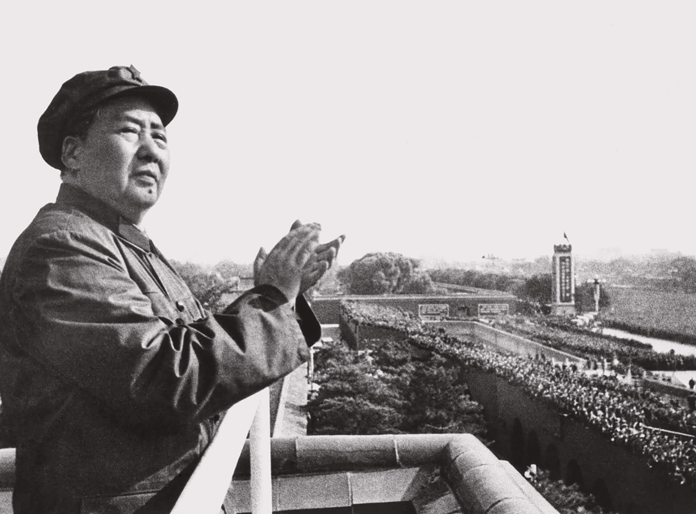
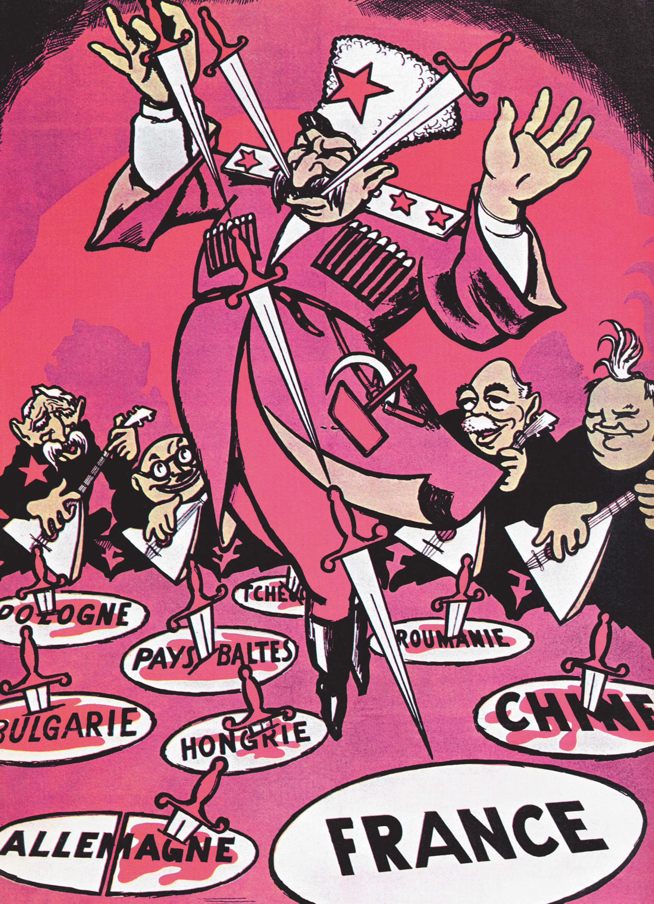
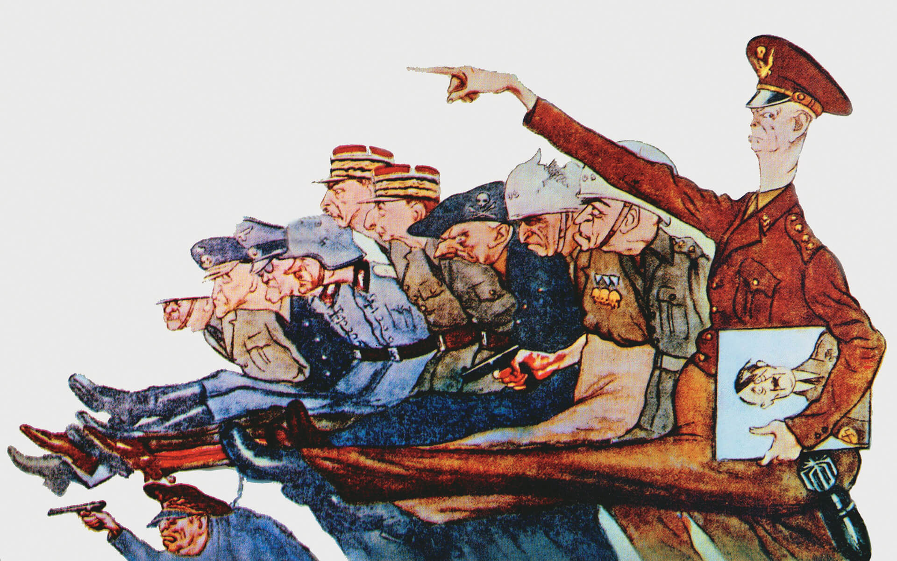

Museu Estatal Russo, São Pertersburgo/ Fotógrafo desconhecido
MÙKHINA, Vera. Trabalhador industrial e jovem de uma fazenda coletiva. 1937. 1 escultura em bronze, 158,5 cm de altura. Museu Estatal Russo, São Petersburgo.

Latinstock/Akg-Images
MAO Tsé-tung. Praça Tiananmen. 1969. 1 fotografia, p&b.
ós a Segunda Guerra Mundial, ocorreram, em diversas colônias, movimentos pela emancipação política. Em muitas das regiões submetidas às ações imperialistas, surgiram grupos que defendiam, além da expulsão dos estrangeiros, também a
adoção do socialismo. A esse respeito, responda à questão a seguir.
Que relação existe entre a exploração imperialista e a adoção do socialismo?
Objetivos da unidade
resgatar o contexto político e econômico dos primeiros anos após o término da Segunda Guerra Mundial, destacando o início da Guerra Fria;
retomar o conceito de socialismo e as suas principais características;
compreender o processo revolucionário que ocorreu na China a partir de 1949, liderado por Mao Tsé-tung;
analisar a Guerra da Coreia aliada ao contexto internacional da Guerra Fria;
compreender o processo de emancipação política da Indochina e as etapas do longo conflito que tornaram o Vietnã um país independente e socialista;
compreender o processo revolucionário ocorrido em Cuba a partir de 1959 e que levou o país a aderir ao socialismo e ao Bloco Soviético.
Estudamos que, após a Segunda Guerra Mundial, o mundo se deparou com a iminência de mais um conflito de grandes proporções. Duas poderosas forças, Estados Unidos e União Soviética, disputavam o predomínio mundial, tendo agora armas
nucleares.
Socialistas e capitalistas acabaram formando dois blocos e a intenção de ambos era ampliar seus aliados e impedir que os integrantes do bloco rival se destacassem no cenário internacional.
Nessa unidade, vamos dar continuidade aos estudos iniciados na unidade anterior, porém, agora, com enfoque nos conflitos que motivaram China, Vietnã (parte integrante da Indochina) e Cuba a adotar o socialismo, além da divisão da
Coreia em dois países.
Organize as ideias
Para iniciar o estudo sobre os movimentos revolucionários e as guerras civis que ocorreram nas regiões citadas, estabeleça algumas relações com os assuntos anteriormente estudados. Comece pela leitura dos seguintes documentos.
A Guerra Fria, nome pelo qual passou a ser conhecido o grande conflito, assumiu desde logo seu caráter predominantemente ideológico e de aniquilação mútua. Uma luta que, em última instância, já vinha sendo travada desde 1917 entre
o capitalismo e o socialismo, mas que agora jogaria a humanidade à beira do abismo nuclear e a dividiria em relação a todos os grandes temas de sua existência moral e social.
BARROS, Edgar Luiz de. A Guerra Fria. São Paulo: Atual, 1995. p. 8.

Biblioteca do Congresso dos Estados Unidos
DANÇA caucasuania. [ca. 1951]. 1 caricatura francesa, color.
Cartaz anticomunista francês, em que se alerta a França sobre a possibilidade de o país cair nas garras da União das Repúblicas Socialistas Soviéticas (URSS). Na representação, Stalin dança atirando facas ao som da balalaica
(instrumento musical típico russo).
De acordo com os documentos, responda a estas questões.
Por que o autor do texto estabelece o ano de 1917 como data de início da luta travada entre o capitalismo e o socialismo?
Se as disputas e rivalidades ideológicas já ocorriam desde 1917, o que levou Estados Unidos, França e Inglaterra a se aliarem à União Soviética durante a Segunda Guerra Mundial?
Qual é o tema tratado na caricatura francesa?
Outras versões
Como a Guerra Fria se revelava um conflito “predominantemente ideológico e de aniquilação mútua”, ambos os blocos lançaram mão da propaganda. Observe a imagem a seguir.

AGB Photo Library/TopFoto
GENERAIS da Otan. 1952. 1 cartum, color.
Na ilustração de origem soviética, estão representados os generais da Organização do Tratado do Atlântico Norte (Otan)
Descreva como os países capitalistas integrantes da Otan são representados. Cite os elementos presentes na imagem que comprovam sua resposta.
Revolução Chinesa
No ano de 1912, a longa monarquia chinesa deu lugar à república. O idealizador e primeiro presidente da República da China foi Sun Yat Sen, além de ser fundador do Partido Nacional (Kuomintang). Como líder que atuou na derrubada da
Dinastia Qing, Sun Yat Sen foi aclamado pai da nação.
Sun Yat Sen tinha por lema o desenvolvimento do nacionalismo, a implantação de uma democracia e a união do povo chinês em prol do bem-estar social. Procurou realizar a aproximação do Kuomintang com o Partido Comunista da China (PCC) em favor do desenvolvimento do país.
O Partido Comunista da China, fundado em 1921, recebeu apoio da União Soviética e contou com a adesão de camponeses e operários.
Sun Yat Sen permaneceu apenas poucos meses como presidente da China. Mesmo retirado da presidência, ele se manteve atuante na luta pela formação de uma república sólida apesar da forte oposição dos grupos que desejavam a manutenção da
monarquia.
O Kuomintang representou a frente contra o Imperialismo difundindo três princípios: “nacionalismo, democracia e solidariedade”. Seu objetivo era conscientizar o povo chinês da necessidade de lutar contra a exploração das potências
estrangeiras. Por esse motivo, os integrantes desse partido também foram denominados “nacionalistas”.
THOMPSON, KT. Sun Yat Sen. Xangai. 1912. 1 fotografia, p&b.
A morte de Sun Yat Sen, em 1925, favoreceu a chegada de Chiang Kai-shek à chefia do Partido Nacional (Kuomintang). Ao contrário de Sun Yat Sen, que procurou a união com os comunistas, o novo líder adotou como estratégia a violência e a
aniquilação, usando-a contra os integrantes do PCC. Realizou incursões a diversas regiões da China a fim de eliminar qualquer resistência à República. Em 1928, chegou ao poder e implantou um governo despótico.
Para evitar a eliminação do PCC, Mao Tsé-tung liderou, entre 1933 e 1934, a Longa Marcha, uma caminhada de cerca de 100 mil pessoas por 9 650 km pelo interior do país, fugindo da perseguição do exército nacionalista.
Os comunistas marchavam durante a noite e se escondiam em florestas ou em vilas durante o dia para fugir dos ataques aéreos promovidos por Chiang Kai-shek, o qual havia recebido recursos de países capitalistas como Inglaterra e
Estados Unidos.
Segundo a biografia de Mao Tsé-tung, escrita por Jung Chang e Jon Halliday, por onde passavam, os comunistas dividiam o pouco alimento que tinham com as populações famintas, realizavam tratamentos médicos nos enfermos, mostrando
solidariedade com a população. Muitas dessas famílias, não tendo muito o que perder, abandonavam suas vilas e acompanhavam os comunistas quando eles seguiam em sua caminhada em direção ao norte. Dos estimados 100 mil integrantes da
Longa Marcha, aproximadamente 70 mil eram camponeses.
Em 1936, os japoneses, em seu processo expansionista, invadiram a região da Manchúria e destruíram consideravelmente a vida da população civil.
Com a invasão japonesa, integrantes do Kuomintang (nacionalistas) e do PCC (comunistas), este liderado por Mao Tsé-tung, foram obrigados a unir forças para lutar contra o inimigo externo. Esses adversários políticos deixaram suas
ideologias de lado para combater a invasão japonesa.
Homem socorre duas crianças na estação de trem de Xangai após o bombardeio japonês. Além dos ataques aéreos, os japoneses ocuparam o território chinês com seus exércitos regulares e mataram um grande número de chineses, a maioria
civis.
Latinstock/Corbis/Hulton-Deutsch Collection
ATAQUE à estação de Xangai durante a Guerra Sino-Japonesa. Xangai. 1937. 1 fotografia, p&b.
Para a ação, Mao Tsé-tung e seus comandados receberam armas, munição e treinamento tático do governo de Chiang Kai-shek.
Quando o conflito mundial terminou, em 1945, com a derrota e rendição japonesa, o inimigo externo já não oferecia mais perigo e Mao Tsé-tung e seus homens, agora armados e treinados, deram inicio à guerra civil.
A luta entre nacionalistas e comunistas terminou em outubro de 1949 quando Mao Tsé-tung assumiu o poder e implantou a República Popular da China. Chiang Kai-shek fugiu para a Ilha de Formosa (Taiwan) onde implantou um governo
capitalista.
MAO Tsé-tung proclama a instalação da República Popular da China em Beijing. 1.º out. 1949. 1 fotografia, p&b.
Com o objetivo de estabelecer uma sociedade igualitária, o novo governo determinou uniformes iguais para toda a população. A única distinção eram as cores diferenciadas para cada profissão ou ocupação.
Para a consolidação da República Popular da China, medidas de cunho socialista foram postas em prática: a reforma agrária, a organização sindical, o fim dos privilégios da burguesia, a criação de um comitê para o desenvolvimento de
novas frentes de trabalho e o desenvolvimento da agricultura. Os estrangeiros foram expulsos do país e cerca de 800 mil pessoas consideradas opositoras ao novo regime foram executadas.
Com o auxílio da União Soviética, a China desenvolveu sua produção industrial. O aumento na geração de eletricidade, na produção de ferro e de aço e na extração de carvão foram os componentes que possibilitaram tal crescimento.
Latinstock/Akg-Images
JOVENS chineses estudam a obra de Mao Tsé-Tung. Beijing. 1966. 1 fotografia, p&b.
Mao Tsé-tung compilou suas ideias em um pequeno livro. Na obra, distribuída à população, estavam os ensinamentos que conclamavam a juventude a abandonar os “Quatro velhos”: as velhas ideias, a velha cultura, os velhos costumes e
os velhos hábitos.
Em 1957, foi lançado um plano econômico denominado o Grande Salto em Frente, que visavava fazer a China crescer em 2 anos o equivalente ao que a União Soviética havia crescido em 30. Mao Tsé-tung conclamou os
camponeses a produzir em larga escala para matar a fome do povo chinês. Todos os setores produziram de forma admirável. Entretanto, o plano fracassou em decorrência de seu mau planejamento: as grandes produções não tinham canais de
escoamento; faltavam estradas, portos e ferrovias para o deslocamento das grandes colheitas, dos pescados e dos produtos industrializados para as outras partes do país.
Com o fracasso do Grande Salto em Frente, Mao Tsé-tung, sentindo-se traído pelos camponeses e operários, lançou-se sobre a juventude chinesa. Segundo ele, os mais velhos estavam viciados no capitalismo. Era necessário formar uma nova
geração de chineses para o sucesso do socialismo no país. Em 1966, foi então iniciada a Revolução Cultural, um programa que objetivava eliminar todos os traços burgueses ainda presentes na sociedade. A Revolução
Cultural durou dez anos
e pode ser considerada a fase mais radical de todo o processo revolucionário chinês. Até mesmo os mais fiéis seguidores do Partido Comunista da China estavam sujeitos a delações, prisão e assassinato.
Acervo Lys Villela
Capa do Livro Vermelho de Mao Tsé-tung. Esse pequeno livro continha todos os ensinamentos que transformariam os chineses em cidadãos exemplares e úteis para o Estado. A obra foi o veículo de doutrinação de toda a população,
especialmente dos jovens.
Interpretando documentos
Leia estes documentos.
Um dia, em 1965, mandaram-nos de repente arrancar toda a grama do jardim. Mao dissera que grama, flores e bichos de estimação eram hábitos burgueses e que tinham que ser eliminados. [...]
As flores eram muito mais fáceis de lidar, mas causavam mais dificuldade ainda, ninguém queria arrancá-las. Mao tinha atacado as flores e gramados várias vezes antes, dizendo que deviam ser substituídos por repolho e algodão. Mas
só agora conseguira gerar pressão suficiente para fazer com que se cumprissem suas ordens – porém só até certo ponto. As pessoas adoravam suas plantas e alguns canteiros de flores sobreviveram à campanha de Mao.
Eu ficava extremamente triste por ver as lindas plantas desaparecerem. Mas não me ressentia contra Mao. Ao contrário, detestava a mim mesma por me sentir infeliz. A essa altura, criara o hábito da “autocrítica”, e automaticamente
me culpava por quaisquer instintos que fossem contra as instruções dele. Na verdade, tais sentimentos me assustavam. Estava fora de questão discuti-los com quem quer fosse. Em vez disso, eu tentava suprimi-los e adquirir o modo
correto de pensar. Vivia em estado de constante autoacusação.
CAPA de livro escolar para o ensino primário. Guangxi. 1971. 1 ilustração, color.
Representação dos jovens da Guarda Revolucionária Vermelha, guiados pelo Livro Vermelho de Mao e em posição de defesa das ideias do líder chinês
JUNG, Chang. Cisnes selvagens: três filhas da China. São Paulo: Companhia das Letras, 1994. p. 252-253.
Após analisar os documentos, responda a estas questões.
De acordo com o texto, de maneira geral, o que era considerado “hábito burguês” por Mao Tsé-tung?
Explique o que motivou Mao Tsé-tung a conclamar os jovens para a Revolução Cultural.
A Revolução Cultural obteve sucesso? Justifique sua resposta.
Você faz História
O Brasil viveu períodos ditatoriais e de censura. Você acredita ser possível, com os atuais meios de comunicação e as redes sociais, um governo obter sucesso ao tentar implantar uma política que elimine a participação crítica dos
jovens nos assuntos referentes ao Brasil? Justifique sua resposta.
A Revolução Cultural durou 10 anos e, mesmo após o seu encerramento, a China permaneceu fechada para o mundo.
Em 1986, com a morte de Mao Tsé-tung, os outros três integrantes da cúpula dirigente, denominados de “O Bando dos Quatro”, foram presos, julgados e condenados à morte. A esposa de Mao, Jian Qing, conhecida no Ocidente como Chiang
Ching, teve a pena comutada para prisão perpétua.
Após a morte de Mao Tsé-tung, gradativamente, as novas lideranças restabeleceram relações diplomáticas e comerciais com outras nações e a economia de mercado foi implantada.
Na atualidade, a economia chinesa vem causando grandes transformações no cenário econômico mundial.
Organize as ideias
Sobre o processo revolucionário ocorrido na China a partir de 1949, analise as afirmativas e marque V para as verdadeiras e F para as falsas.
a) ( ) Mao Tsé-tung, líder do Partido Comunista da China, fez oposição ao
governo de Chiang Kai-shek.
b) ( ) A Segunda Guerra Mundial não alterou as relações entre o Kuomintang
e o PCC.
c) ( ) A Longa Marcha iniciou com a perseguição promovida pelo governo de
Chiang Kai-shek aos comunistas chineses.
d) ( ) O Grande Salto em Frente foi uma política que objetivava estabelecer
aliança com os Estados Unidos para o desenvolvimento econômico da China.
e) ( ) A Revolução Cultural visava aprofundar a revolução comunista na
China, eliminando todos os hábitos capitalistas remanescentes no país.
Reescreva as afirmativas falsas da questão anterior, tornando-as verdadeiras.
Observe as imagens que fizeram parte da propaganda de Mao Tsé-tung, de seu governo e de suas políticas socioeconômicas.
Publicação: LANDSBERGER, Stefan R.; ANCHEE Min; DUO Duo. Chinese propaganda posters. Taschen, 2003.
PROPAGANDA chinesa. 1 ilustração, color. Coleção de Michael Wolf. LANDSBERGER, Stefan R.; ANCHEE Min; DUO Duo. Chinese propaganda posters. Taschen, 2003.
O presidente Mao Tsé-tung em visita aos altos-fornos, 1964
Publicação: LANDSBERGER, Stefan R.; ANCHEE Min; DUO Duo. Chinese propaganda posters. Taschen, 2003.
PROPAGANDA chinesa. 1 ilustração, color. Coleção de Michael Wolf. LANDSBERGER, Stefan R.; ANCHEE Min; DUO Duo. Chinese propaganda posters. Taschen, 2003.
O presidente Mao Tsé-tung em visita a campos de alto rendimento, 1963
Após a análise das imagens, produza um texto que contemple os seguintes itens:
período econômico da China a que as imagens fazem referência;
objetivos do líder chinês nesse período;
a figura de Mao Tsé-tung é central nas duas imagens; pesquise mais informações sobre o denominado culto à personalidade.
Guerra da Coreia
A Coreia é uma península localizada na costa leste da Ásia, entre a China e as ilhas do Japão. Ainda na atualidade, abriga dois países separados pelos sistemas econômicos que adotaram.
A Península da Coreia esteve ocupada pelo Japão por mais de três décadas, de 1910 a 1945. Neste último ano, quando ocorreram as detonações das bombas atômicas em Hiroshima e Nagasaki que levaram o Japão à rendição, a península
permaneceu ocupada pelos Estados Unidos e pela União Soviética – países aliados que estabeleceram bases militares na região para monitorar as ações japonesas.
Com o início das hostilidades entre estadunidenses e soviéticos pelo controle da região, a recém-criada Organização das Nações Unidas (ONU) demarcou os territórios peninsulares referentes a cada um dos ocupantes militares. O paralelo
38º norte foi a linha demarcatória estabelecida. As terras ao norte ficariam para as bases militares soviéticas, e os estadunidenses ocupariam o sul. Tal demarcação acabou por gerar a formação de dois países distintos: a Coreia do Norte
e a Coreia do Sul.
Península da Coreia: divisão política atual
Marilu de Souza
Fonte: ATLAS geográfico Melhoramentos. São Paulo: Melhoramentos, 2009. Adaptação.
O exército da República Popular da Coreia do Norte, em junho de 1950, invadiu as terras da Coreia do Sul com o objetivo de unificar a península sob seu comando.
Em tempos de Guerra Fria, os Estados Unidos imediatamente forneceram ajuda militar à Coreia do Sul; e os soviéticos, à República Popular da Coreia. O general Douglas MacArthur, herói da Segunda Guerra e designado pelo governo
estadunidense para administração do Pacífico, ameaçou lançar uma bomba atômica na capital norte-coreana se a invasão territorial não fosse revertida. Em 1953, mais uma vez, a ONU interferiu e intermediou um acordo que reafirmou o
paralelo 38º norte como fronteira entre os dois países.
Entre as últimas décadas do século XX e as primeiras do século XXI, vários acordos buscaram aproximar os dois governos e possibilitar a unificação, juntando famílias separadas desde o fim da Segunda Guerra Mundial. Apesar de alguns
avanços, as Coreias são uma marca persistente da Guerra Fria.
Em dezembro de 1945, sul-coreanos se manifestaram contra a presença das tropas soviéticas e estadunidenses na Coreia do Sul.
Organize as ideias
Sobre a Península da Coreia, analise as afirmativas a seguir.
A Península foi ocupada por tropas estadunidenses e soviéticas durante a Segunda Guerra Mundial. O território coreano foi utilizado como base estratégica pelas duas potências que lutavam contra o Japão.
Tomando por base o paralelo 38º norte, a divisão da Península acabou com os conflitos na região.
A Coreia é um exemplo de que todas as sequelas causadas pela Guerra Fria foram resolvidas.
De acordo com a análise, assinale a alternativa correta.
a) Todas as afirmativas são verdadeiras.
b) Todas as afirmativas são falsas.
c) Apenas as afirmativas I e II são falsas.
d) Apenas as afirmativas I e III são falsas.
e) Apenas as afirmativas II e III são falsas.
Guerra do Vietnã
A Guerra do Vietnã foi o conflito mais longo travado no século XX. Iniciou em 1945 e terminou em 1976, com a unificação do Vietnã do Norte e do Sul e a adoção do sistema socialista.
Para compreender esse longo conflito, é necessário recordar que os atuais países Vietnã, Laos e Camboja formavam a Indochina, região em que os franceses estabeleceram seu domínio colonial em 1887.
Com a destruição causada à França pela Segunda Guerra Mundial, os vietnamitas, assim como os cambojanos e os laosianos, passaram a planejar o processo que os separaria definitivamente dos franceses.
Em razão de sua longa duração, é possível dividir o conflito pela emancipação política do Vietnã em três fases, sendo o período de intervenção efetiva dos Estados Unidos o mais conhecido e explorado pelo cinema.
Luta contra a França – 1945 a 1954
Ao norte do território vietnamita, surgiu um grupo guerrilheiro de esquerda denominado Vietminh, fundado por Ho Chi Minh. Os integrantes do Vietminh receberam apoio da União Soviética e da China.
Aproveitando o enfraquecimento da França, o Vietminh realizou a emancipação política da região norte do Vietnã, proclamando a República Popular do Vietnã, cuja capital passou a ser Hanói. O sul do Vietnã continuou ligado à França.
Os Estados Unidos, temendo que se concretizasse a teoria dos dominós, passaram a fornecer dinheiro para desenvolver economicamente a região, o que proporcionaria bem-estar à população. O
governo estadunidense desejava transformar o sul do Vietnã em uma “vitrine capitalista” na Ásia, incentivando outras colônias a se emancipar politicamente e aderir ao bloco capitalista.
A teoria dos dominós é atribuída a John Foster Dulles, secretário de Estado do governo Dwight Eisenhower. Fazendo uma analogia com dominós que podem ser sistematicamente derrubados quando, lado a lado, formam uma
fileira, essa doutrina impelia os Estados Unidos a barrar a influência soviética, sob o risco de muitos outros países aderirem ao comunismo.
Por causa da corrupção, o dinheiro concedido pelos Estados Unidos nunca chegou até a população. Em decorrência do aumento da pobreza e da exploração sofrida pelo povo vietnamita, surgiu um grupo guerrilheiro muito similar ao Vietminh –
a Frente Nacional de Libertação, mais conhecida como Vietcong.
Diante da eminência de novos conflitos na região, a Organização das Nações Unidas (ONU) promoveu a Convenção de Genebra em 1954. No encontro, foi estipulado o paralelo 17º norte como marco divisório entre Vietnã do Norte e Vietnã do
Sul. Observe no mapa como ficou a divisão.
Vietnã: Convenção de Genebra, 1954
Marilu de Souza
Fonte: ATLAS geográfico Melhoramentos. São Paulo: Melhoramentos, 2009. Adaptação.
Interpretando documentos
Ho Chi Minh comparava a luta entre o poder colonial francês e a sua guerrilha Viet Minh a um combate entre “um elefante e um gafanhoto”. O general francês Henri Navarre parecia estar de acordo com ele ao empreender, em novembro de
1953, a fortificação da aldeia de Dien Bien Phu, situada no coração do território inimigo. O objetivo era atrair a guerrilha para uma inusitada batalha de tipo clássico, na qual o poder de fogo francês faria a diferença. O general
Giap aceitou o desafio. Com 50 mil camponeses formando uma cadeia de abastecimento para trazer do norte armamento chinês, seus homens cercaram a aldeia, bombardearam as duas pistas de pouso e dizimaram impiedosamente as tropas
inimigas. O cerco durou 55 dias, até a queda do último bastião francês, em 7 de maio [de 1954]. De uma guarnição de 16 mil soldados, só 3 mil sobreviveram.
A derrota marcou o fim de oito anos de luta dos franceses para recuperar sua antiga colônia. Eles, que haviam tido pouco entusiasmo por la sale guerre (a guerra suja) na Indochina, decidiram que a Argélia era agora o seu
interesse
prioritário. Em Genebra, seus negociadores concordaram em se retirar do Sudeste Asiático e o Diante da eminência de novos conflitos na região, a Organização das Nações Unidas (ONU) promoveu a Convenção de Genebra em 1954. No
encontro, foi estipulado o paralelo 17º norte como marco divisório entre Vietnã do Norte e Vietnã do Sul. Observe no mapa como ficou a divisão. Vietnã do Norte País independente Sistema socialista Apoiado pela China e pela URSS
Grupo guerrilheiro: Vietminh Capital: Hanói Vietnã do Sul Território ligado à França Sistema capitalista Apoiado pelos Estados Unidos Grupo guerrilheiro: Vietcong Capital: Saigon História 41 Agora, responda a estas questões no
caderno. 1. Explique a comparação estabelecida por Ho Chi Minh ao fazer referência a um combate entre “um elefante e um gafanhoto”. 2. Com a desistência da França em continuar lutando no Vietnã, a guerra teve fim? Justifique sua
resposta. Vietnã foi dividido: os comunistas de Ho e Giap controlavam o Norte e uma república anticomunista, patrocinada pelos Estados Unidos, foi estabelecida no SuI. Lançavam-se assim as sementes da sangrenta Guerra do Vietnã, da
década de 1960.
Latinstock/Rue des Archives/PVDE
VITÓRIA na Batalha de Dien Bien Phu. 7 maio 1954. 1 fotografia, p&b. Vietnam People’s Army Museum, Hanói.
Soldado Vietminh tremula a bandeira socialista no bunker francês de Dien Bien Phu
1001 DIAS que abalaram o mundo. Rio de Janeiro: Sextante, 2009. p. 781.
Agora, responda a estas questões.
Explique a comparação estabelecida por Ho Chi Minh ao fazer referência a um combate entre “um elefante e um gafanhoto”.
Com a desistência da França em continuar lutando no Vietnã, a guerra teve fim? Justifique sua resposta.
Intervenção estadunidense – 1954 a 1973
Mesmo com a definição da ONU sobre o paralelo 17º norte como fronteira entre os dois Vietnãs, os vietcongs (guerrilheiros do sul) continuaram a atuar, recebendo auxílio do Vietminh, da China e da União Soviética.
A França, envolvida em outras lutas coloniais, anunciou sua retirada do Vietnã do Sul. O governo estadunidense, em uma tentativa de evitar tal saída, que implicaria a adesão de mais um país ao socialismo, passou a fornecer armas,
munição e técnicos especialistas nesses artefatos bélicos para os franceses.
Diante dos avanços dos vietcongs e da relutância da França, em 1961, os Estados Unidos enviaram tropas.
CAPA, Robert. Mulheres e criança ao lado de um túmulo. 1954. Namdinh. 1 fotografia, p&b.
Glow Images/Granger
SOLDADOS estadunidenses da primeira Divisão de Infantaria lutando no Vietnã a dez milhas da fronteira com o Camboja. Mar. 1970. 1 fotografia, p&b.
No decorrer dos volumes estudados, foi possível observar várias fotos de Robert Capa, considerado o maior fotógrafo de guerra do século XX. Capa morreu cobrindo a Guerra da Indochina ao pisar em uma mina terrestre. Essa fotografia
foi um dos seus últimos trabalhos e atesta o grande número de mortos decorrente da guerra.
Acostumados a táticas tradicionais de guerra, os soldados estadunidenses passaram a sofrer derrotas. A solução foi usar armas químicas. O uso de agente laranja e de bombas de napalm e de bilha
colocou a opinião pública internacional contra os Estados Unidos. A opinião pública interna também passou a exigir o fim da guerra.
O agente laranja é uma mistura de dois herbicidas que foi utilizada pelas forças armadas estadunidenses no Vietnã como desfolhante. Quando as primeiras tropas estadunidenses desembarcaram no Vietnã, 92% do território
era coberto por matas, fator que dificultava a luta para um exército que não conhecia o terreno e tinha experiência restrita a guerras tradicionais. Especialmente durante o período das chuvas, quando a vegetação ficava amarelada, a
mata servia de camuflagem para os vietcongs em razão do tom amarelado da pele. O agente laranja se revelou um elemento altamente cancerígeno, outro fator terrível associado ao conflito.
O fotógrafo Nick Ut, que cobria a guerra para a Associated Press, clicou o exato momento em que crianças fogem da vila atingida por napalm. Inicialmente, a foto não seria divulgada pela proibição de exposição de figuras nuas.
Entretanto, o editor-chefe permitiu a publicação da foto, fator que tornou conhecida a história da menina Kim Phuc e contribuiu para que pessoas em todo o mundo se oferecessem para custear seu tratamento. A divulgação do fato também
angariou mais adeptos para os protestos contra a utilização de armas químicas.
Nick Ut tinha apenas vinte anos quando fez a foto de Kim Phuc e por ela recebeu o prêmio Photo World em 1972 e o Pulitzer em 1973.
Glow Images/AP Photo/Nick Ut
UT, Nick. Menina fugindo do napalm. 1972. 1 fotografia, p&b.
A menina Kim Phuc aparece correndo após ter as costas atingidas por napalm, no dia 8 de junho de 1972. A menina foi salva pelo fotógrafo Nick Ut, que a levou para o hospital. A denominação napalm é derivada das primeiras
letras de seus componentes: sais de alumínio coprecipitados dos ácidos naftênico e palmítico. Tais sais eram adicionados a componentes inflamáveis para se tornarem gelificados.
Em 1973, após 11 anos de permanência no Vietnã, o presidente Richard Nixon reconheceu a derrota e anunciou a retirada das tropas estadunidenses do território vietnamita.
Guerra civil – 1973 a 1976
Com a retirada das tropas estrangeiras, o conflito no Vietnã do Sul se tornou uma guerra civil entre vietnamitas, que defendiam o capitalismo, e os vietcongs, defensores do socialismo.
Com a vitória dos vietcongs em 1976, ocorreu a unificação do território sob o sistema socialista.
Organize as ideias
(UFRGS) O primeiro conflito armado da Guerra Fria, que colocou em campos opostos os Estados Unidos e a União Soviética, ocorreu com:
a) o lançamento de bombas atômicas pelos Estados Unidos sobre o Japão e a retirada soviética daquele país.
b) a divisão da Coreia pela linha imaginária do Paralelo 38º e as tentativas de norte-coreanos para a unificação da península.
c) a construção do muro de Berlim para impedir a reunificação da República Federal da Alemanha e da República Democrática Alemã.
d) a instalação de mísseis soviéticos em Cuba e a determinação americana de bloquear a ilha.
e) a revolução cultural realizada na China, que pôs fim ao tratado de aliança sino-soviético.
(UFPE) No século XX, muitas guerras aconteceram, mostrando que a violência e o militarismo continuavam suas trajetórias. A sofisticação tecnológica serviu para aumentar o poderio de potências imperialistas. Uma das guerras mais
polêmicas foi a do Vietnã, que contou com a participação dos Estados Unidos. Nessa guerra:
a) prevaleceu, com a ajuda da França, a força militar dos norte-americanos, que arrasaram o Vietnã do Norte e afirmaram sua liderança política.
b) foram usadas armas modernas, de grande poder de destruição, tornando clara, no mundo contemporâneo, a articulação das técnicas com a força do capital.
c) houve, em várias cidades do mundo, movimentos de protesto contra o imperialismo dos Estados Unidos, e esse país foi acusado de violento e desumano.
d) evitou-se a expansão do Socialismo na Ásia, o que ameaçou a liderança da União Soviética e da China, grandes potências militares.
e) houve mobilização de artistas e intelectuais, de várias partes do mundo, o que aumentou a pressão política para que os Estados Unidos mudassem sua estratégia de participação no conflito.
Revolução Cubana
A América Latina também esteve envolvida em movimentos que visavam acabar com as ações imperialistas dos Estados Unidos sobre o continente.
Um dos grandes exemplos de ação contra o imperialismo estadunidense, fortemente influenciada pelo contexto da Guerra Fria, foi a Revolução Cubana iniciada em 1959.
Para compreender todo esse processo, é necessário lembrar que Cuba foi colonizada pelos espanhóis, dos quais conseguiu emancipação política em 1898.
Logo após a emancipação, Cuba passou a sofrer as intervenções dos Estados Unidos em sua política e economia. Utilizando a Doutrina Monroe, os estadunidenses forneceram apoio e reconheceram a
independência dos países latino-americanos. Entretanto, aí estava também a grande porta aberta para a entrada das “ações imperialistas yankees”.
A Doutrina Monroe foi colocada em prática pelo presidente James Monroe em 1823. Em seu discurso, o presidente afirmava não ter mais lugar na América para as ações imperialistas das potências europeias e oferecia
auxílio para as lutas emancipacionistas realizadas pelas colônias americanas.
No caso de Cuba, as intervenções estadunidenses eram garantidas pela constituição do novo país, à qual foi inserida a Emenda Platt – dispositivo que autorizava a interferência dos Estados Unidos em assuntos do Estado cubano, sempre que
tal intervenção fosse conveniente para os dois países.
A situação de desigualdade social e de exploração das classes trabalhadoras cubanas foi agravada pela ditadura de Fulgencio Batista y Zaldívar, que governou de 1933 a 1940 e de 1952 a 1959. O ditador era considerado um fantoche a
serviço dos interesses estadunidenses na ilha, pois as usinas produtoras de açúcar, os meios de transporte, a eletricidade estavam sob o controle de investidores estrangeiros.
Diante de toda a situação política, econômica e social presente em Cuba, surgiu um grupo de opositores ao governo de Batista. Fidel Castro e seus companheiros planejaram um golpe para a derrubada do ditador no dia 26 de julho de 1954.
O golpe para tomar o Quartel de Moncada não foi bem-sucedido e seus líderes foram presos.
O grupo opositor ao governo de Batista ficou conhecido como Movimento 26 de Julho. Os integrantes, presos após o fracasso da ação, foram libertados e banidos da ilha em decorrência da mobilização popular. Fidel
Castro, exilado no México, fundou o M 26-7 com o auxílio de Camilo Cienfuegos e Che Guevara. De lá, o movimento passou a recrutar adeptos e realizar atos contra o governo de Batista.
A invasão de Cuba foi planejada no México e colocada em ação. Na Ilha, 82 integrantes do movimento chegaram a bordo do iate Gamma e foram atacados pela força aérea colocada à disposição de Batista pelos Estados Unidos.
O grupo foi obrigado a se refugiar em Sierra Maestra, onde organizaram um acampamento militar. No local, também foram estabelecidos hospitais, escolas de alfabetização e a Rádio Rebelde, que transmitia mensagens conclamando a adesão
dos cubanos ao Exército Rebelde de Guerrilheiros.
O número de integrantes do movimento rapidamente aumentou com o ingresso de camponeses. Nas regiões urbanas, intelectuais tratavam de difundir o movimento entre operários e estudantes.
A luta contra Batista foi intensificada em 1958. No início de 1959, com a fuga de Batista para a República Dominicana, Fidel Castro tomou o poder e anunciou a formação de um novo governo.
Latinstock/Alamy/Salas Archive Photos
SALAS, Osvaldo. Che Guevara com Raúl e Fidel Castro em Havana. 1961. 1 fotografia, p&b.
Líderes do Movimento 26 de Julho, que passou a lutar contra a ditadura de Fulgencio Batista
Logo após o estabelecimento do novo governo, Fidel Castro anunciou medidas para amenizar a pobreza na Ilha. Estabeleceu o controle de preço dos alimentos básicos, novas leis para os salários, reformas na educação visando à
alfabetização de todos os cubanos, promoveu a construção de hospitais e a nacionalização das empresas estrangeiras, fato que gerou maior oposição dos Estados Unidos ao novo governo.
Em abril de 1961, exilados cubanos contrários ao governo de Fidel, apoiados pela Agência Central de Inteligência dos Estados Unidos (Central Intelligence Agency – CIA), tentaram invadir o sul da ilha com o objetivo de derrubar
o governo de Castro. Esse episódio ficou conhecido como “Desembarque na Baía dos Porcos”. No mesmo ano, Fidel Castro se aproximou da União Soviética e recebeu a visita de Nikita Kruschev. Mais tarde, em outubro de 1962, um episódio,
fruto da aliança entre Fidel Castro e União Soviética, colocou o mundo novamente à beira de um terceiro confronto mundial. Os soviéticos estavam armazenando mísseis no território cubano para um possível ataque aos Estados Unidos. A
“crise dos mísseis”, como o incidente ficou conhecido, foi resolvida por meio de um acordo entre o presidente John Kennedy e o líder Nikita Kruschev para a retirada dos mísseis.
Fidel Castro manteve como prioridade, em seu longo governo, a melhoria das condições de vida da população e do setor de saúde, além da erradicação do analfabetismo.
Com a dissolução da União Soviética em 1989 e o surgimento da Comunidade de Estados Independentes (CEI) em 1991, Cuba passou a viver uma séria crise econômica, pois não recebia mais o auxílio financeiro soviético. A partir de então, os
problemas começaram a se avolumar. Uma grande quantidade de cubanos fugiu tentando chegar às ilhas da Flórida. Muitos dos que permaneceram em Cuba passaram a fazer oposição ao governo de Fidel e de seu irmão, Raúl Castro, que assumiu a
presidência do país em 2008.
Troca de ideias
Os textos a seguir foram extraídos do blog Generación Y, editado por Yoani Sánchez, cubana que divulga ao mundo as reais condições de vida na ilha de Fidel e Raúl Castro.
POST 1
Se alguém viu progressos em Los Angeles, por favor, diga-me por SMS para +53527[...]. Internet continua inviável como uma semana atrás.
POST 2
Vêm tempos difíceis. Sou otimista no longo prazo, porém a inquietude me tolhe ante os anos que se avizinham. Há muita tensão acumulada. Semearam sistematicamente entre nós o repúdio à opinião diferente e isso não se apaga em
pouco tempo. Ontem quando vi uma dona de casa que gritava em tom vulgar “os vermes estão protestando” – referindo-se à peregrinação das Damas de Branco – constatei como é longo o caminho
da tolerância que temos pela frente.
Aprender a debater sem ofender, a conviver com a pluralidade e a respeitar as diferenças terá que se constituir numa matéria obrigatória em nossas escolas. Será um longo processo fazer que todos entendam que a diversidade não é
uma doença, mas sim um alívio. Temo que o grito se torne crônico entre nós e que a bofetada continue sendo o caminho mais rápido para calar o outro. Estremece-me pressagiar uma Cuba onde se continua atacando física e legalmente
alguém por sua filiação política ou sua tendência ideológica. Que triste país teremos se às autoridades continue parecendo natural o castigo aos que contradizem a opinião oficial. Já me redunda bastante doente uma sociedade que
assiste passiva ao acosso que sofreram ontem umas mulheres pacíficas com gladíolos em suas mãos. Porém o sectarismo não parou por ali, assim é que tentaram justificá-lo e por ele prepararam as pressas um roteiro para o programa
mais tedioso da televisão cubana: a Mesa Redonda. Contudo, os telespectadores – depois de duas horas de escuta estoica – confirmaram que a ausência de argumentos deixou-lhes somente o insulto, a difamação e os malabarismos
verbais.
Damas de Branco é um movimento de mulheres cubanas que lutam pela libertação de seus irmãos, pais, maridos ou filhos mantidos como presos políticos. Elas saem às ruas vestidas de branco e levando flores nas
mãos.
Porque não têm o valor de convidar, para este aborrecido set onde fazem um monólogo a cada tarde, ao menos um par de pessoas que pense diferente? O mais tímido e moderado dos inconformados que conheço os desnudaria com um par
de perguntas e com umas curtas frases faria cambalear sua teoria de conspiração. Porém não se atrevem. Amparados pelo poder – não há pior aliado para um jornalista – com seu verbo e sua caneta sustentados com as prebendas e os
privilégios, sabem que não suportariam a artilharia da crítica. Daí que exaltam o golpe, açulam as palavras de ordem e põem uns vídeos editados para provar que o diferente tem que ser esmagado. Alimentam desse modo o fanatismo,
esse gérmem que ameaça prolongar-se além de suas próprias vidas: o legado de ódios e desconfiança que este sistema pretende deixar-nos.
SÁNCHEZ, Yoani. [Posts] Tradução Humberto Sisley de Souza Neto. mar. 2010. Disponível em: <https://generacionypt.wordpress.com/2010/03/>. Acesso em: 10 set. 2015.
Para melhor compreensão do texto, crie um glossário.
pressagiar:
acosso:
gladíolos:
sectarismo:
estoica:
prebendas:
Agora, de acordo com os textos e nossos estudos no decorrer da unidade, faça o que se pede a seguir.
a) Conforme as informações coletadas na reportagem e as ideologias presentes no cenário europeu durante o século XIX, analise as afirmativas a seguir e marque V para as
afirmativas verdadeiras e F para as falsas.
O blog editado pela cubana Yoni Sánchez é uma forma de protesto contra as condições materiais de vida e de falta
de liberdade em Cuba na atualidade.
Ao verificarmos algumas informações contidas na reportagem, é possível afirmar que os ideais de igualdade
material, pregados pelo socialismo, estão presentes em Cuba.
É possível afirmar que as condições de vida e de trabalho na Ilha são de igualdade e prosperidade.
O texto pode ser interpretado como comprovação de que os ideais de uma sociedade igualitária, sonhados por Marx e
Engels, ainda não foram atingidos na prática.
O fato de o blog de Yoani Sánchez não poder ser lido pelos habitantes de Cuba denota a presença de censura e
ausência da liberdade de expressão no país.
b) Retorne à seção Você faz História presente nesta unidade. Provavelmente, você respondeu, em tal seção, que seria muito difícil no Brasil da atualidade um governo
implantar um governo
ditatorial; isso por causa dos meios de comunicação que possibilitam o engajamento de centenas ou milhares de pessoas em defesa de uma causa.
Em Cuba, por outro lado, que fatores possibilitam o cerceamento da liberdade de expressão em pleno século XXI?
c) Segundo Yoani Sánchez, de que maneira uma sociedade aprende a conviver com a pluralidade?
Mundo do trabalho
Membro do Comitê Internacional da Cruz Vermelha
A Cruz Vermelha é uma organização humanitária criada em 1863 por Jean Henri Dunant e visa auxiliar populações em situação de perigo, seja em zonas de guerra ou em locais afetados por acidentes naturais.
A Cruz Vermelha possui sede em Genebra, Suíça, e arrebanha profissionais das mais diversas áreas para a realização de ações que abrangem desde tratamento médico, fornecimento de alimentos, ensino de técnicas de plantio e de
estabelecimento de saneamento básico até deslocamento de populações de regiões de risco. Portanto, médicos, enfermeiros, engenheiros, especialistas em comunicações e logística, assistentes sociais, entre outros, podem solicitar filiação
à Organização e realizar o trabalho pelo período de um ano, prazo que pode ser renovado.
Trata-se de uma oportunidade de ganhar experiência profissional, auxiliando populações de diversas partes do mundo ou do próprio país, além de possibilitar contato com diferentes povos, culturas e realidades.